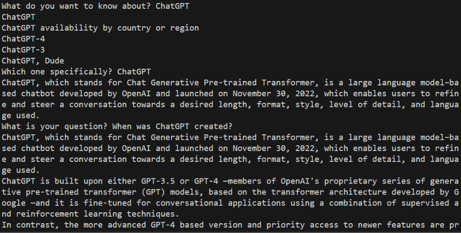
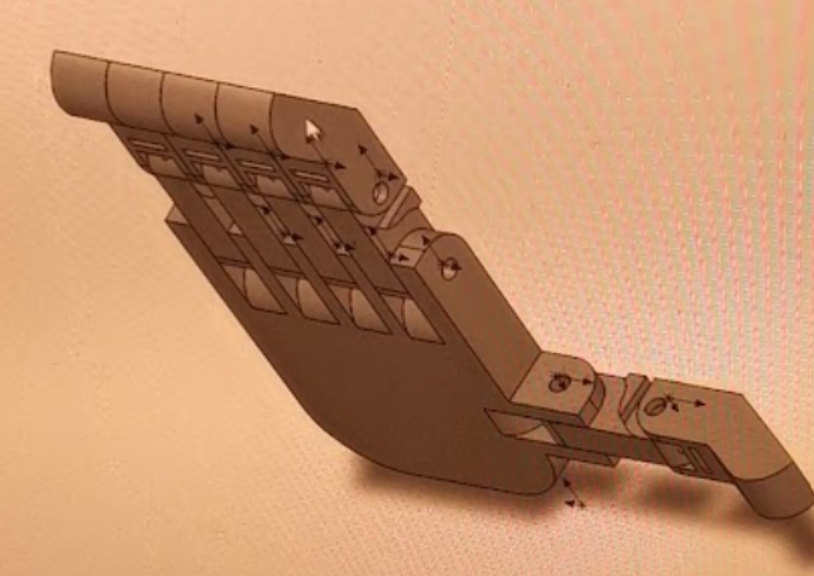

This responsive website made with HTML, SASS (CCS), and Javascript
has user friendly interfaces.
Created a Chatbot that retrieves information from Wikipedia via an API, processes the text using Python’s
natural language processing library, and matches relevant sentences with corresponding questions.

Programmed an Arduino and servo motors to control a 3D printed prosthetic hand, simulating EMG(Electromyography) using a potentiometer
Explored 3D modeling with SolidWorks: While primarily using a downloaded 3D model, also attempted 3D drawing of a hand in SolidWorks,
demonstrating an interest in 3D design.
